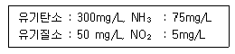
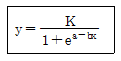
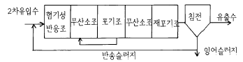
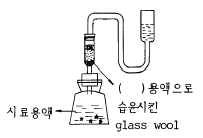
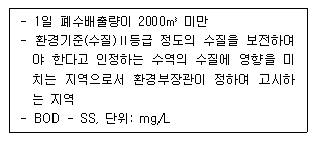

수질환경기사 (2003-08-31 기출문제)
1과목: 수질오염개론
1. 내부기관이 발달되어 있지 않고 Bacteria에 가까우며 광합성을 하는 미생물로 엽록소가 엽록체 내부에 있지 않고 세포전체에 퍼져있는 것은? (단, 섬유상이나 군락상의 단세포로 편모없음)
- 규조류
- 남조류
- 녹조류
- 진균류
(정답률: 45%)

2. 성층현상에 관한 설명으로 알맞지 않는 것은?
- 수심에 따른 온도변화로 인해 발생되는 물의 밀도차에 의해 발생된다.
- 봄, 가을에는 저수지의 수직혼합이 활발하여 분명한 열밀도층의 구별이 없어진다.
- 성층현상이 일어나는 겨울의 수심에 따른 수질은 균일하며 양호한 편이다.
- 겨울과 여름에는 수직운동이 없어 정체현상이 생기며 수심에 따라 온도와 용존산소농도 차이가 크고 겨울보다 여름이 정체가 더 뚜렷히 생긴다.
(정답률: 10%)
3. 환경미생물에 관한 다음 설명중 옳지 않은 것은?
- 미생물계에 있어서 진핵세포와 원핵세포의 차이는 핵막의 유무뿐만 아니라 세포구조의 다른점에도 있다.
- 미생물의 성장단계중 가장 성장이 빠른 단계인 대수 성장단계를 수처리에 주로 적용하고 있다.
- 진균류는 다핵의 진핵생물이며 비광합성이고 호기성이다.
- 박테리아는 미세한 단세포 생물로서 분열에 의해서 증식한다.
(정답률: 85%)
4. 어떤 폐수를 분석하여 다음과 같은 결과를 얻었다. 이론적인 최종산소요구량은?

- 약 1300 mg/L
- 약 1800 mg/L
- 약 2300 mg/L
- 약 2800 mg/L
(정답률: 60%)
5. 우리나라 근해의 적조(red tide)현상의 발생 조건에 대한 설명으로 알맞지 않는 것은?
- 플랑크톤의 증식을 위한 햇빛이 강하고 수온이 높을 때 많이 발생한다.
- 여름철 갈수기에 수온상승에 따른 상승류 현상으로 영양분 농도가 높아질 때 잘 발생된다.
- 정체수역에서 많이 발생된다.
- 질소, 인 등의 영양분이 풍부하고 규소, 칼슘, 마그네슘 등의 영양염과 더불어 미량의 금속, 비타민 등이 존재할 때 많이 발생한다.
(정답률: 알수없음)
6. 다음 중 부영양화 현상을 억제하는 방법과 가장 거리가 먼 것은?
- 비료나 합성세제의 사용을 줄인다.
- 축산폐수의 유입을 막는다.
- 과잉번식된 조류(algea)는 황산망간(MnSO4)을 살포 하여 제거 또는 억제할 수 있다.
- 하수처리장에서 질소와 인를 제거하기 위해 고도처리 공정을 도입하여 질소, 인의 호소유입을 막는다.
(정답률: 알수없음)
7. 호소수에서 발생되는 부영양화에 대한 설명으로 틀린 것은?
- 투명도를 기준으로 부영양화의 정도를 지수로 평가 하는 대표적인 방법은 칼슨지수이다.
- 부영양화평가모델은 인(P)부하모델인 Vollenweider 모델과 P-엽록소 모델인 사카모토모델등이 대표적이다.
- 특정조류의 이상적 번식으로 물꽃현상이 일어나며 한번 발생되면 수개월에서 수년간에 걸쳐 서서히 소멸되는 특징이 있다.
- 부영양화가 급속하게 진행되면 호수는 가속적으로 얕아지게 되고 결국 늪지대로 변한뒤 소멸하게 된다.
(정답률: 34%)
8. Colloid용액이 갖는 일반적인 특성으로 틀린 것은?
- 광선을 통과시키면 입자가 빛을 산란하여 빛의 진로를 볼 수 없게 된다.
- 콜로이드 입자가 분산매 및 다른 입자와 충돌하여 불규칙한 운동을 하게된다.
- 콜로이드 입자는 질량에 비해서 표면적이 크므로 용액속에 있는 다른 입자를 표면에 흡착한다.
- 콜로이드 용액에서는 콜로이드 입자 전부가 양이온 또는 음이온을 띠고 있다.
(정답률: 73%)
9. 다음은 물의 전도도(도전율)에 대한 설명이다. 이 중 잘못된 것은?
- 함유 이온이나 염의 농도를 종합적으로 표시하는 지표이다.
- 0℃에서, 단면 1cm2, 길이 1㎝의 용액의 대면(對面)간의 비저항치로 표시된다.
- 하구와 같이 담수와 해수가 혼합되어 있어 그 분포를 해석함에 있어 전도도 조사가 좋다.
- 증류수나 탈이온화수의 광물 함량도의 평가에 이용된다.
(정답률: 80%)
10. CaF2의 용해도적이 3.9×10-11일 때 용액 500mL에 녹아 있는 CaF2의 양(g)은? (단, CaF2의 분자량은 78 )
- 약 0.002
- 약 0.008
- 약 0.02
- 약 0.08
(정답률: 74%)
11. 다음은 진핵생물에 대한 설명이다. 틀린 것은?
- 유사분열을 하며 염색체가 여러 개이다
- 호흡을 위한 사립체가 있다
- 2∼9개의 편모가 있다
- 세포벽은 무코펩티드(mucopeptide)로 되어 있다
(정답률: 47%)
12. 다음 중 박테리아 세포에서만 발견되는 기관으로 호흡에 관여하는 효소가 존재하는 것은?
- 메소좀(mesosome)
- 볼루틴 과립(volutin granules)
- 협막(capsule)
- 리보좀(ribosomes)
(정답률: 59%)
13. 다음은 완충용액에 관한 내용이다. 옳지 못한 것은?
- 완충방정식은 pKa + log([염]/[산])으로 표시된다.
- 약산 Na2HPO4의 HPO42- 이온과 염이온 KH2PO4의 H2PO4-이온이 완충력으로 작용한다.
- 완충용액은 보통 약산과 그 약산의 강염기의 염을 함유하거나 약염기와 그 약염기의 강산의 염이 함유된 용액이다.
- CH3COOK에 있어서는 거의 완전히 해리하므로 CH3COO-농도는 거의 CH3COOK의 농도에 가까워진다.
(정답률: 28%)
14. 수온이 20℃인 어느 하천은 대기로부터의 용존산소공급량이 0.06mgO2/ℓ -hr라고 한다. 이 하천의 평상시 용존산소 농도가 4.8mg/ℓ 로 유지되고 있다면 이 하천의 산소전달 계수는? (단, α , β 값은 각각 0.75이며, 포화용존산소농도는 9.2 mg/ℓ 이다.)
- 0.38/hr
- 3.8× 10-2/hr
- 3.8× 10-3/hr
- 3.8× 10-4/hr
(정답률: 56%)
15. 다음은 물에 대한 설명이다. 틀린 것은?
- 고체 상태에서는 수소결합에 의해 육각형의 결정구조로 되어 있다.
- 기화열이 크기 때문에 생물의 효과적인 체온조절이 가능하다.
- 융해열이 크기 때문에 생물체의 결빙이 쉽게 일어나지 않는다.
- 광합성의 수소수용체로서 호흡의 최종산물이다.
(정답률: 알수없음)
16. 다음중 탄산의 전리상수(K)를 옳게 나타낸 것은? (단, 1단계와 2단계를 총괄한 반응식 기준)
- [H+]2 [CO32-]/[H2CO3]
- [H+][HCO3]/[H2CO3]
- [H+][CO32-]/[HCO3-]
- [H+]2[HCO32-]/[H2CO3]
(정답률: 75%)
17. 다음중 유사경도(pseudo-hardness)와 관련된 물질은?
- Cl-
- H+
- Na+
- NO3-
(정답률: 알수없음)
18. 보통 농업용수의 수질평가시 SAR(sodium adsorption ratio)로 정의하는데 이에 대한 설명으로 틀린 것은?
- SAR값이 20정도이면 Na+가 토양에 미치는 영향이 적다.
- SAR의 값은 Na+, Ca2+, Mg2+ 농도와 관계가 있다.
- 경수가 연수보다 토양에 더 좋은 영향을 미친다고 볼 수 있다.
- SAR의 값 계산식에 사용되는 이온의 농도는 me/L를 사용한다.
(정답률: 알수없음)
19. 산소주입량을 구하기 위하여 먼저 물 속의 용존산소를 0 으로 만들려고 한다. 이를 위하여 용존산소가 포화(표준상태에서 포화농도를 9.07㎎/ℓ 로 가정)된 물에 소요되는 Na2SO3의 첨가량은? (단, Na: 23, S: 32, 완전 반응하는 경우로 가정함 )
- 25.7㎎/ℓ
- 44.8㎎/ℓ
- 50.5㎎/ℓ
- 71.4㎎/ℓ
(정답률: 65%)
20. 96hr TLm은 Cu가 2.0㎎/ℓ, CN-가 0.4㎎/ℓ, NH3가 4.0㎎/ℓ 이며 실제 혼합시험수에서 농도가 Cu 0.8㎎/ℓ, CN- 0.04㎎/ℓ, NH3 0.2㎎/ℓ 이었을 때 Toxic unit는?
- 0.15
- 0.55
- 0.89
- 0.92
(정답률: 53%)
2과목: 상하수도계획
21. 하천의 제내지나 제외지 혹은 호소부근에 매설되어 복류수를 취수하기 위하여 사용하는 집수매거에 관한 설명으로 알맞지 않는 것은?
- 집수매거의 방향은 통상 복류수의 흐름방향에 직각이 되도록 한다.
- 집수매거의 매설깊이는 5m를 표준으로 한다.
- 집수공에서의 유입속도는 3cm/sec 이하가 되어야 한다.
- 집수구멍의 직경은 2-8mm로 하며 그 수는 관거 표면적 1m2당 200-300개 정도로 한다.
(정답률: 40%)
22. 하수도의 기본계획에 관한 설명으로 틀린 것은?
- 하수도 계획의 목표년도는 원칙적으로 20년 정도로 한다.
- 하수의 배제방식은 지역의 특성, 방류수역의 여건 등을 고려하여 정한다.
- 토구의 위치 및 구조는 방류수역의 수질 및 수량에 미치는 영향을 종합적으로 고려하여 결정한다.
- 하수처리 구역내에서 발생하는 수세분뇨는 하수관거에 투입하지 않는 것을 원칙으로 한다.
(정답률: 40%)
23. 내경 1.5m인 강관에 압력이 10kgf/cm2의 물이 흐른다. 강재의 허용응력이 1500kgf/cm2일 때 강관의 최소 두께는?
- 0.3cm
- 0.5cm
- 1.0cm
- 1.5cm
(정답률: 34%)
24. 배수관(配水管)의 설계에서 최대 동수압은 가능한 한 몇 kg/cm2 이내로 계획하는 것이 바람직한가?
- 0.2 kg/cm2
- 0.6 kg/cm2
- 1.2 kg/cm2
- 4.0 kg/cm2
(정답률: 19%)
25. 다음 급수량 계산에 대한 설명 중 틀린 것은?
- 계획1일 최대급수량은 계획1인1일 최대급수량에 계획에 급수인구를 곱하여 결정한다.
- 계획1일 평균급수량은 계획1일 최대 급수량의 60%-70%를 표준으로 하여야 한다.
- 1일 평균급수량은 연간 총급수량을 365일로 나눈 값이다.
- 계획1일 평균급수량은 약품,전력사용량의 산정이나 유지관리비와 상수도 요금의 산정 등에 사용된다.
(정답률: 54%)
26. 원심력 펌프의 규정회전 N=10회/sec,토출량 Q= 50m3/min, 전양정 15m 일 때, 이 펌프의 비회전수는?
- 약 470회
- 약 510회
- 약 560회
- 약 630회
(정답률: 알수없음)
27. 정수장의 플록형성지에 관한 설명으로 틀린 것은?
- 플록형성지는 혼화지와 침전지 사이에 위치하고 침전지에 접속하여 설치하여야 한다.
- 플록형성시간은 계획정수량에 대하여 20-40분간을 표준으로 한다.
- 플로큐레이터의 주변속도는 15-80cm/초로 한다.
- 플록형성지에서의 교반강도는 상류,하류를 동일하게 유지하여 일정한 강도의 플록을 형성시킨다.
(정답률: 54%)
28. 오수처리를 위한 관거계획에 관한 설명으로 틀린 것은?
- 오수관거는 계획시간최대오수량을 기준으로 계획한다.
- 합류식에서 하수의 차집관거는 우천시 계획오수량을 기준으로 계획한다.
- 관거는 원칙적으로 암거로 하며 수밀한 구조로 하여야 한다.
- 오수관거와 우수관거가 교차하는 경우에는 우수관거를 역사이펀으로 하는 것이 바람직하다.
(정답률: 알수없음)
29. 다음은 로지스틱(logistic)인구 추정공식이다. 기호 설명 중에서 틀린 것은?

- y : 기준년으로부터 경과년수 후의 인구
- K : 년평균 인구증가율
- x : 기준년으로부터 경과년수
- a,b : 상수
(정답률: 알수없음)
30. 하천 표류수를 수원으로 할 때 기준으로 할 하천수량은 다음 중 어느 것인가?
- 갈수량
- 평수량
- 홍수량
- 최대 홍수량
(정답률: 알수없음)
31. 계획우수량 산정시 고려하는 확률년수로 알맞는 것은?
- 원칙적으로 20 - 25년으로 한다.
- 원칙적으로 15 - 20년으로 한다.
- 원칙적으로 10 - 15년으로 한다.
- 원칙적으로 5 - 10년으로 한다.
(정답률: 22%)
32. 펌프의 비속도(비교회전도)에 대한 다음의 설명 중 적합하지 아니한 것은?
- 비속도가 작아지면 공동현상(cavitation)이 발생하기 쉽다.
- 비속도가 같으면 펌프의 대소에 관계 없이 같은 형식으로 되며 특성도 대체로 같다.
- 비속도가 크면 양수량은 크고 양정은 낮은 펌프가 된다.
- 비속도는 축류펌프가 터어빈펌프에 비하여 높다.
(정답률: 24%)
33. 직경 1m의 원형콘크리트관을 하수가 흐르고 있다. 동수구배(I)가 0.01이고, 수심이 0.5m일 때 유속은? (단, 조도계수(n): 0.013, Manning 공식적용, 만관기준 )
- 1 m/sec
- 3 m/sec
- 5 m/sec
- 7 m/sec
(정답률: 67%)
34. 고도처리시설의 계획하수량(합류식하수도)으로 알맞는 것은?
- 우수량
- 대상수량
- 계획시간최대오수량
- 계획1일최대오수량
(정답률: 10%)
35. 취수장에서 사용되는 pump의 흡입관 구경은? (단, 흡입구의 유속이 3m/sec이고, 계획 양수량은 14400m3/day 이다.)
- 167 mm
- 226 mm
- 267 mm
- 326 mm
(정답률: 20%)
36. 계획송수량과 계획도수량의 기준이 되는 수량은?
- 계획송수량: 계획 1일 최대 급수량, 계획도수량: 계획 시간 최대 급수량
- 계획송수량: 계획 시간 최대 급수량, 계획도수량: 계획 1일 최대 급수량
- 계획송수량: 계획취수량, 계획도수량: 계획 1일 최대 급수량
- 계획송수량: 계획 1일 최대 급수량, 계획도수량: 계획취수량
(정답률: 38%)
37. 다음 응집제 중 알카리도를 가장 크게 감소시키는 것은? (단, 응집제 1mg/L 주입 기준)
- 황산알루미늄(액체)(Al2O3 8% )
- 황산알루미늄(고형)(Al2O3 15% )
- 폴리염화알루미늄(Al2O3 염기도 30% )
- 폴리염화알루미늄(Al2O3 염기도 50% )
(정답률: 알수없음)
38. 상수관로의 길이 800m, 내경 200mm에서 유속 2m/s로 흐를때 관마찰 손실수두는? (단, Darcy-Weisbach 공식을 이용하며 마찰손실계수는 0.02)
- 16.3m
- 18.4m
- 20.7m
- 22.6m
(정답률: 알수없음)
39. 배수관에 사용되는 관종 중 '강관'의 특징에 관한 설명 으로 틀린 것은?
- 내면조도가 변화하지 않는다.
- 라이닝의 종류가 풍부하다.
- 가공성이 좋다.
- 전식에 대한 배려가 필요하다.
(정답률: 20%)
40. 펌프 선정에 대한 고려 사항중 잘못된 것은?
- 전양정이 6m 이하이고 구경이 200mm 이상의 경우는 사류(斜流)또는 축류(軸流)펌프를 선정함을 표준으로 한다.
- 전양정이 20m 이상이고 구경이 200mm 이하의 경우는 원심력 펌프를 선정함을 표준으로 한다.
- 침수의 위험이 있는 장소에는 횡축(橫軸)펌프를 선정함을 표준으로 한다.
- 깊은우물 경우는 수중모우터펌프 혹은 깊은 우물용 펌프를 사용한다.
(정답률: 36%)
3과목: 수질오염방지기술
41. 실개천의 유량을 결정하기 위하여 농도가 1,000mg/L인 보존성 추적 물질을 1L/min의 비율로 주입하였다. 실개천 하류에서 추적물질의 농도가 2mg/L로 측정되었다면 실개천의 유량(m3/sec)은?
- 2.6× 10-3
- 5.4× 10-3
- 8.3× 10-3
- 9.2× 10-3
(정답률: 7%)
42. 유기인 함유폐수에 관한 설명으로 틀린 것은?
- 유기인화합물은 산성이나 중성에서 안정하며 물에 난용성이다.
- 유기인화합물이 폐수에 함유된 경우에는 대부분이 현탁입자로 존재한다.
- 일반적으로 알칼리로 가수분해 시키고 응집침전 또는 부상으로 전처리한 후 활성탄 흡착으로 미량의 잔류물질을 제거시킨다.
- 저농도인 경우는 자외선조사 또는 염소산화분해 방법이 효과적이다.
(정답률: 10%)
43. 혐기성공법 중 혐기성유동상의 장점이 아닌 것은?
- 짧은 수리학적 체류시간과 높은 부하율로 운전가능
- 미생물 체류시간을 적절히 조절하여 저농도 유기성 폐수처리가능
- 유출수 재순환으로 유출수의 편류발생 방지
- 매질의 첨가나 제거가 용이
(정답률: 6%)
44. 질산화 박테리아에 대한 다음 설명중 옳지 않은 것은?
- 절대호기성이어서 높은 산소농도를 요구한다
- Nitrobacter는 암모니움이온의 존재하에서 pH 9.5이상이면 생장이 억제된다
- 질산화 반응의 최적온도는 25℃이며 20℃이하, 40℃이상에서는 활성이 없다.
- Nitrosomonas는 알칼리성 상태에서는 활성이 크지만 pH 6.0이하에서는 생장이 억제된다.
(정답률: 알수없음)
45. 생물학적 인(P)제거와 가장 큰 관련이 있는 미생물은?
- Pseudomonas
- Micrococus
- Bacillus
- Acinetobacter
(정답률: 12%)
46. 폐수량이 10000m3/day이며 SS가 400mg/ℓ 침전지의 SS 제거율이 80%이며 침전슬러지의 함수율이 98%일 때 슬러지의 부피는? (단, 슬러지 비중은 1.0 으로 가정함)
- 100m3/day
- 120m3/day
- 140m3/day
- 160m3/day
(정답률: 알수없음)
47. 회전원판법의 일반적인 특징이라 볼 수 없는 것은?
- 단회로 현상의 제어가 어렵다.
- 폐수량변화에 강하다.
- 파리는 발생하지 않으나 하루살이가 발생하는 수가 있다.
- 활성슬러지법에 비해 최종침전지에서 미세한 부유물질이 유출되기 쉽다.
(정답률: 알수없음)
48. 다음 분산 현상을 실험하는데 쓰이는 물질(추적자)중 분자량이 커서 침적생물 여상에 사용되는 것으로 가장 적절한 것은?
- Lithium
- Dextran blue
- Fluorescein
- 염화나트륨
(정답률: 15%)
49. 어느 공장에서 500m3의 폐수(BOD=80mg/ℓ )를 매일 인근하천(유량 = 150,000m3/d,BOD = 2mg/ℓ )으로 방류하고 있다. 공장에서 생산하는 제품 1kg당 약 25L의 물이 소모된다. 공장 폐수 방류직후 하천과 완전혼합된 하천의 BOD를 4mg/ℓ 이하로 유지하고자 할 때 이 공장을 증설하여 별다른 수처리없이 1일 동안 생산 가능한 제품의 최대량은? (단, 법적상황은 고려하지 않음)
- 142 ton
- 150 ton
- 157 ton
- 165 ton
(정답률: 11%)
50. 시안(CN)계 폐수의 처리공법과 가장 거리가 먼 것은?
- 중화침전법
- 전해산화법
- 오존산화법
- 알칼리산화법
(정답률: 15%)
51. 분리막을 이용한 수처리의 방법과 구동력이 서로 잘못 짝지어진 것은?
- 정밀여과 : 정수압차
- 역삼투 : 농도차
- 전기투석 : 전위차
- 한외여과 : 정수압차
(정답률: 25%)
52. 다음 응집제의 특성을 설명한 것중 틀린 것은?
- 황산알루미늄 : 형성된 플록이 비교적 가볍고 적정 pH폭이 매우 넓어 광범위하게 적용되고 있다.
- 염화제2철 : 형성 플록이 무겁고 침강이 빠르며 부식성이 강하다.
- 황산제1철 : pH와 알카리도가 높은 물에서 주로 사용하며 부식성이 강하다.
- PAC : 플록형성속도가 빠르며 저온 열화(劣化)하지 않는다.
(정답률: 0%)
53. 다음중 탈질소화 공정에서 일반적으로 탄소원 공급용으로 가해주는 화학약품은?
- CH3OH
- C2H5OH
- CH3COOH
- C2H4OH
(정답률: 알수없음)
54. 하수의 3차 처리를 위한 생물학적공법중 '인' 제거만을 주목적으로 개발된 것은?
- Bardenpho process
- A2/O process
- 수정 Bardenpho process
- A/O process
(정답률: 27%)
55. 아래 프로세스의 명칭으로 알맞는 것은?

- 혐기호기(A2/O)프로세스
- 수정Bardenpho프로세스
- Phostrip프로세스
- UCT프로세스
(정답률: 알수없음)
56. 다음 조건하에서 Monod 식(Michaelis-Menten식 이용)을 사용한 세포의 비증식속도(Specific growth rate)는? (단, 제한기질농도 200mg/ℓ ,1/2포화농도 50mg/ℓ , 세포의 비증식속도 최대치 0.2hr-1)
- 0.04hr-1
- 0.08hr-1
- 0.16hr-1
- 0.36hr-1
(정답률: 34%)
57. 다음 식은 이온교환법을 이용한 수처리 과정이다. 어떤 단계를 나타내는가? [Ca+2+2Na · Ex ⇄ Ca · Ex2+2Na+1] (단, Ex: 이온교환 고형물 )
- 연수화 과정
- 탈염화 과정
- 재생 과정
- 고도처리 과정
(정답률: 30%)
58. 활성슬러지 공법의 어느 폭기조의 유효용적이 1000m3, MLSS 농도는 3,000mg/L이고 MLVSS는 MLSS 농도의 75%이다 유입하수의 유량은 4000m3/day이고 합성계수 Y는 0.42mgMLVSS/mg제거 BOD, 내생분해계수 k는 0.08day-1, 1차 침전조 유출수의 BOD는 200mg/L, 처리장 최종 유출수의 BOD는 20mg/L일 때 슬러지 생성량은?
- 122.4 kg/day
- 162.4 kg/day
- 193.4 kg/day
- 212.4 kg/day
(정답률: 알수없음)
59. 현재 10℃로 운전되는 역삼투 장치로 하루에 760,000L의 3차 처리된 유출수를 탈염시키고자 한다. 요구되는 막면적은? (단, 25℃에서 물질전달계수=0.2068L/(day-m2)(kPa), 유입수와 유출수 사이의 압력차=2400kPa, 유입수와 유출수의 삼투압차=310kPa 최저 운전온도=10℃, A10° =1.2A25° )
- 약 2030m2
- 약 2070m2
- 약 2110m2
- 약 2160m2
(정답률: 15%)
60. 인이 16mg/L 포함된 폐수에서 인을 침전시키는데 실제로 필요한 액체명반의 량은? (단, - 실질적으로 인 1몰당 알루미늄 1.5몰이 필요함 (이론적으로는 1몰당 1몰이 필요함) - 유량은 10000m3/day, - 액체명반은 Al2(SO4)3 · 18H20 - Al 원자량:27, P 원자량: 31, - 명반순도 48%, - 액체명반용액의 단위중량 1281kg/m3 )
- 약 3200 L/day
- 약 4200 L/day
- 약 5200 L/day
- 약 6200 L/day
(정답률: 37%)
4과목: 수질오염공정시험기준
61. 원자흡광광도법을 이용한 비소의 정량에서 측정하는 비화수소는 다음 중 어떤 금속 분말을 넣어 발생시키는가?
- 크롬
- 망간
- 납
- 아연
(정답률: 31%)
62. 투명도의 측정방법에 관한 설명중 옳지 않은 것은?
- 측정값의 정확성을 기하기 위하여 반복해서 측정하고 평균값을 0.1m 단위로 읽는다.
- 강우시나 수면에 파도가 격렬한 때는 정확한 투명도를 얻을 수 없으므로 투명도를 측정하지 않는 것이 좋다.
- 흐름이 있어 줄이 기울어질 경우에는 2kg 정도의 추를 달아서 줄을 세워야 한다.
- 투명도판은 무게가 약 3kg인 지름 30cm의 구멍이 없는 백색원판으로 광반사능을 높인 것을 사용한다.
(정답률: 20%)
63. 다음 그림은 비소시험장치(비화수소발생장치)이다. ( )안에 알맞은 물질은? (단, 흡광광도법 기준)

- AsH3
- SnCl2
- Pb(CH3COO)2
- AgSCNS(C2H5)2
(정답률: 알수없음)
64. 음이온계면활성제를 측정하는 흡광광도법에서 음이온계면 활성제와 메틸렌블루가 반응하여 생성된 청색의 복합체를 추출하는데 사용하는 용액은?
- 디티존
- 디티오카르바민산
- 메틸이소부틸케톤
- 클로로포름
(정답률: 58%)
65. 다음 중 시료 최대보존기간이 가장 긴 항목은? (단, 적절한 보존방법을 적용한 경우임)
- 암모니아성 질소
- 아질산성 질소
- 질산성 질소
- 시안
(정답률: 19%)
66. 용존산소를 Winkler-Azide화 나트륨 변법에 의한 측정시 사용되는 황산의 작용으로 가장 적절한 것은?
- I2 가 산성에서 NaI로 반응되게 한다.
- H2MnO3를 MnSO4로 되게 한다.
- Mn(OH)2를 H2MnO3로 되게 한다.
- 강한 산화제 역할을 하여 KI를 요오드로 유리한다.
(정답률: 25%)
67. 분원성 대장균군의 측정에 관한 설명으로 틀린 것은?
- 분원성 대장균군은 온혈동물의 배설물에서 발견된다.
- 분원성 대장균군은 그람음성, 무아포성의 간균이다.
- 막여과 시험방법의 실험기간은 최적확수시험법의 1/4정도 소요된다.
- 최적확수 시험시 정성시험은 추정, 확정, 완전시험으로 한다.
(정답률: 알수없음)
68. 다음 사항중 가스크로마토그래피의 기본 구성장치가 아닌 것은?
- 가스유로계
- 광원부
- 가열오븐
- 검출기
(정답률: 9%)
69. 부유물질이 적은 대형관내에서 효율적인 유량측정기기로서 왼쪽관은 정수압, 오른쪽관은 0인 상태인 정체압력을 마노미터에 나타나는 수두차에 의해 유속이 계산되는 관내의 유량측정방법은?
- 벤츄리미터
- 유량측정용노즐
- 오리피스
- 피토우관
(정답률: 13%)
70. 산화성물질이 함유된 시료나 착색된 시료에 적합하며 특히 윙클러-아지드화나트륨 변법에 사용할 수 없는 폐하수의 용존산소 측정에 유용하게 사용할 수 있는 측정법은?
- 흡광광도법
- 격막전극법
- 알칼리비색법
- 이온환원법
(정답률: 알수없음)
71. 플루오르(불소)를 란탄-알리자린 콤프렉손법(흡광광도법)으로 분석할 경우, 알루미늄 및 철의 방해영향은 어떠한 실험과정에 의하여 제거 되는가?
- 산화
- 증류
- 침전
- 환원
(정답률: 27%)
72. pH 표준액의 pH 값이 0℃에서 제일 큰(높은) 값을 나타내는 표준액은?
- 수산염 표준액
- 프탈산염 표준액
- 탄산염 표준액
- 붕산염 표준액
(정답률: 25%)
73. 데발다합금 환원증류법으로 측정할 수 있는 항목은?
- 아질산성질소
- 질산성질소
- 총질소
- 암모니아성질소
(정답률: 알수없음)
74. 흡광광도법으로 폐수 중 크롬을 분석할 때 사용하지 않는 시약은?
- 과망간산칼륨
- 요소
- 디페닐카르바지드
- 초산부틸
(정답률: 10%)
75. 폐수처리 process에서의 유입수 및 그 유출수의 COD를 측정하기 위해 유입수는 시료 5㎖, 유출수는 시료 50㎖에 각각 물을 가하여 100㎖로서, COD를 측정했을 때 N/40 과망간산칼륨 용액의 적정치는 각각 5.2㎖와 4.7㎖였다. COD 제거율은 몇 %인가? (단, N/40 과망간산 칼륨 용액의 역가는 1.000이며 공시험치는 0.2㎖이다.)
- 75
- 81
- 85
- 91
(정답률: 알수없음)
76. 흡광광도법에 의한 CN량 측정시 시료에 함유된 황화합물을 제거하기 위해 사용하는 시약은?
- 초산아연 용액
- L-아스코르빈산
- 아비산나트륨
- 초산 또는 수산화나트륨
(정답률: 39%)
77. 다음 중 유기질소 화합물 및 유기염소 화합물을 선택적으로 검출할 수 있는 가스크로마토그래피법용 검출기는?
- 열전도도 검출기
- 불꽃열이온화 검출기
- 전자포획형 검출기
- 불꽃광도형 검출기
(정답률: 30%)
78. 수질오염공정시험방법상 6가 크롬측정과 가장 거리가 먼 것은?
- 흡광광도법
- 이온전극법
- 원자흡광광도법
- 유도결합플라즈마 발광광도법
(정답률: 37%)
79. 온도의 영향이 있는 공정시험의 판정은 다음 중 어느 것을 기준으로 하는가?
- 상온
- 실온
- 표준온도
- 찬곳
(정답률: 10%)
80. 다음 중 수질오염공정시험방법상 시료의 보존방법이 다른 항목은?
- 염소이온
- 색도
- 부유물질
- 음이온계면활성제
(정답률: 알수없음)
5과목: 수질환경관계법규
81. 시· 도지사는 관할구역안의 오염원 등에 대한 조사를 몇 년마다 실시하여야 하는가?
- 2년
- 3년
- 5년
- 10년
(정답률: 알수없음)
82. "환경관리인을 두어야 하는 사업장의 범위 및 환경관리인의 자격기준, 임명기간은 ( )으로 정한다." ( )안에 알맞는 내용은?
- 대통령령
- 유역환경청장령
- 환경부령
- 시,도지사령
(정답률: 40%)
83. 폐수종말처리시설 기본계획에 포함되지 않는 사항은?
- 폐수종말처리시설설치를 위한 예상 공사비 및 공사 기간
- 폐수종말처리시설의 설치 및 운영자에 관한 사항
- 부과금의 비용부담에 관한 사항
- 폐수종말처리시설에서 처리된 폐수가 방류수역의 수질에 미치는 영향에 관한 평가
(정답률: 5%)
84. 다음 조건에서 적용되는 오염물질의 배출허용기준은?

- 80 이하 - 80 이하
- 70 이하 - 70 이하
- 60 이하 - 60 이하
- 50 이하 - 50 이하
(정답률: 알수없음)
85. 환경부장관이 호소수질보전구역지정시 고려하여야 하는 사항과 가장 거리가 먼 것은?
- 집수구역내의 생태계 현황 및 환경영향평가계획
- 집수구역의 환경기초시설 확충계획
- 집수구역안의 토지이용현황 및 장래이용계획
- 집수구역안의 인구· 산업· 축산· 행정구역등의 개황
(정답률: 0%)
86. [ 폐수라 함은 물에 ( )의 수질오염물질이 혼입되어 그대로 사용할 수 없는 물을 말한다. ]( )안에 알맞는 내용은? (단, 수질환경보전법상 폐수에 대한 용어 정의임)
- 기체성, 액체성 또는 고체성
- 액체성
- 액체성 또는 고체성
- 고체성
(정답률: 알수없음)
87. 기본부과금산정시 방류수수질기준 초과율이 20%이상 30%미만인 경우에 부과계수는?
- 1.0
- 1.2
- 1.4
- 1.6
(정답률: 8%)
88. 공동방지시설을 설치하고자 하는 때에 사업자가 제출하여야하는 서류와 가장 거리가 먼 것은? (단, 배출시설설치허가,신고를 하지 않은 사업자의 경우)
- 사업장에서 공동방지시설에 이르는 배수관거 설치 도면 및 위치도(축척 2만 5천분의 1 지형도)
- 사업장별 원료사용량, 제품생산량에 관한 서류, 공정도와 폐수 배출배관도
- 사업장별 배출시설의 설치명세서 및 오염물질 등의 배출량예측서
- 사업장별 폐수배출량 및 오염물질농도를 측정할 수 없을 때의 배출부과금, 과태료, 과징금, 벌금등에 대한 분담내역을 포함한 공동방지시설의 운영에 관한 규약
(정답률: 25%)
89. 종말처리시설종류별 배수설비의 설치방법 및 구조기준에 관한 설명으로 틀린 것은?
- 배수관의 관경은 내경 150mm 이상으로 하여야 한다.
- 배수관 입구에는 유효간격 10mm 이하의 스크린을 설치하여야 한다.
- 유량계 및 각종 계량기 설치는 배수설비의 부대시설로 본다.
- 시간최대폐수량이 일평균폐수량의 1.5배 이상인 경우는 자체 유량조정조를 설치하여야 한다.
(정답률: 37%)
90. 다음중 수질오염의 실태를 파악하기 위한 측정망의 위치, 범위, 구역 등을 명시한 수질오염측정망 설치계획에 포함 되지 않는 사항은?
- 측정망 설치시기
- 측정망 배치도
- 측정망 설치기간
- 측정소를 설치할 토지 또는 건축물의 위치 또는 면적
(정답률: 20%)
91. 배출시설 변경신고에 따른 가동개시신고 대상과 가장 거리가 먼 것은?
- 폐수배출량이 신고당시보다 100분의 50이상 증가되는 경우
- 배출시설에 설치된 방지시설의 폐수처리방법을 변경하는 경우
- 배출시설에서 배출허용기준을 초과한 오염물질이 발생하여 개선이 필요한 경우
- 방지시설 설치면제기준에 따라 방지시설을 설치하지 아니한 배출시설에 방지시설을 새로이 설치하는 경우
(정답률: 10%)
92. 오염물질의 배출허용기준 지역구분에 해당되지 않는 것은?
- 청정지역
- 특례지역
- 가지역
- 특정지역
(정답률: 7%)
93. 폐수배출시설에서 채취한 오염물질이 배출허용기준에 적합한지 여부를 검사할 수 있는 기관이 아닌 곳은?
- 유역환경청
- 국립환경기술원
- 광역시 보건환경연구원
- 환경관리공단의 소속사업소
(정답률: 알수없음)
94. 특정수질유해물질에 해당되지 않는 것은?
- 1,1- 디클로로에틸렌
- 사염화탄소
- 테트라클로로에틸렌
- 포름알데히드
(정답률: 7%)
95. 배출부과금을 부과할 때 고려할 사항이라 할 수 없는 것은?
- 오염물질의 배출기간
- 배출되는 오염물질의 종류
- 배출허용기준 초과여부
- 배출되는 오염물질농도
(정답률: 알수없음)
96. 다음은 하천의 수질환경기준에서 상수원수 3급, 수산용수 2급, 공업용수 1급에 적용되는 기준이다. 맞는 것은?
- pH : 6.0∼8.5
- BOD : 6㎎/ℓ 이하
- SS : 50㎎/ℓ 이하
- DO : 5㎎/ℓ 이하
(정답률: 25%)
97. 초과부과금의 부과대상이 되는 오염물질이 아닌 것은?
- 총질소
- 불소화물
- 트리클로로에틸렌
- 망간 및 그 화합물
(정답률: 10%)
98. 개선명령을 받지 아니한 사업자가 개선계획서을 제출하여 개선하는 경우와 가장 거리가 먼 것은?
- 배출시설 또는 방지시설의 주요 기계장치 등의 돌발적인 사고로 인하여 적절하게 운영할 수 없는 경우
- 단전, 단수로 배출시설 또는 방지시설을 적절하게 운영할 수 없는 경우
- 배출시설 또는 방지시설을 개선, 변경 또는 보수하고자 하는 경우
- 처리조건변경 또는 이상물질유입 등으로 인하여 방지시설을 적절하게 운영할 수 없는 경우
(정답률: 0%)
99. [환경분야의 교육은 ( ① )마다 ( ② )이상 이수하여야하며 교육과정의 기간은 ( ③ )이내로 한다.] ( )안에 알맞는 것은? ( 순서대로 ① - ② - ③ )
- 3년 - 1회 - 5일
- 3년 - 1회 - 3일
- 2년 - 1회 - 5일
- 2년 - 1회 - 3일
(정답률: 10%)
100. 배출시설의 가동개시신고를 하지 아니하고 조업한 자에 대한 벌칙기준으로 적절한 것은?
- 2년이하의 징역 또는 1000만원이하의 벌금
- 1년이하의 징역 또는 500만원이하의 벌금
- 6월이하의 징역 또는 200만원이하의 벌금
- 200만원이하의 벌금
(정답률: 24%)